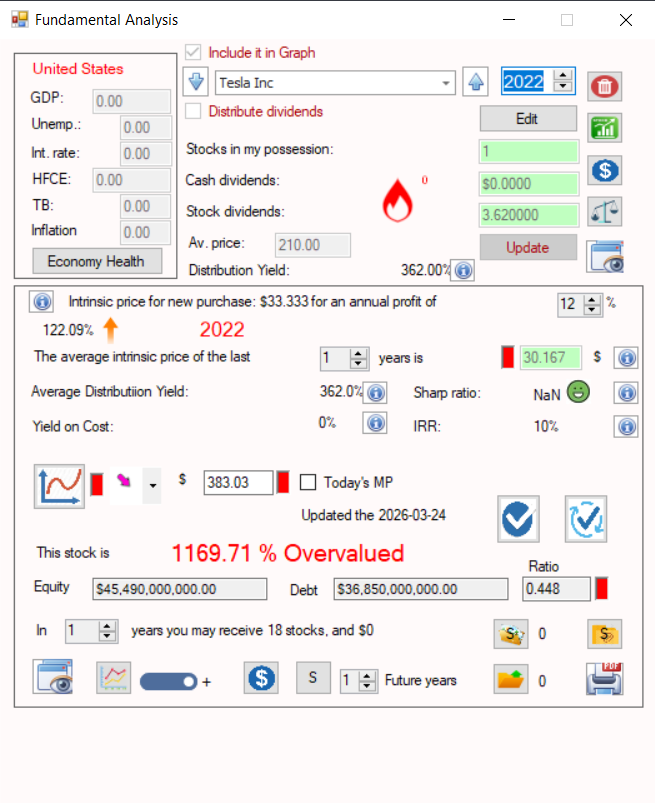
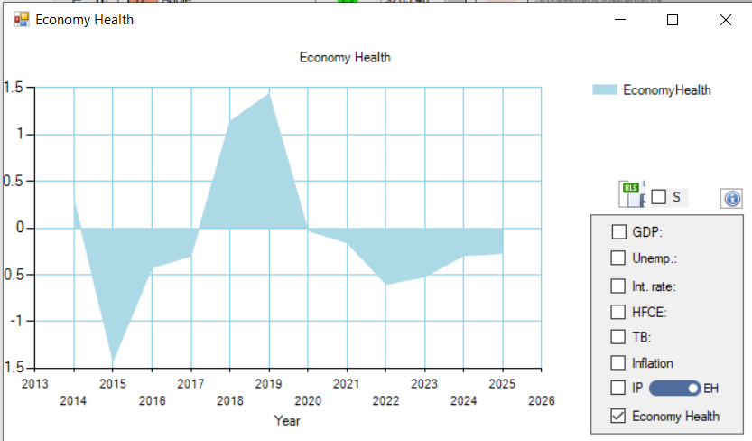
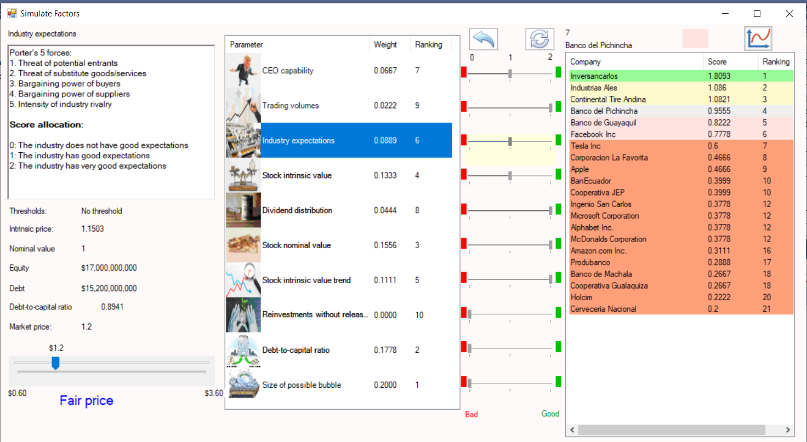
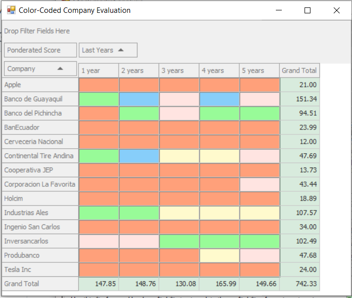
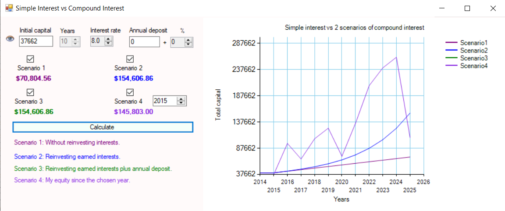
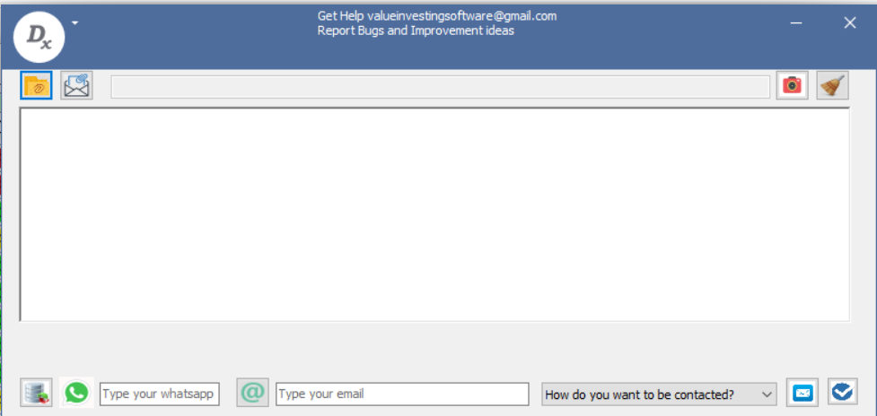

Interface Principale
Vue d’ensemble du tableau de bord principal du logiciel desktop, offrant l’accès à tous les modules analytiques et outils de portefeuille.

Enregistrement d’Achat d’Actions
Interface utilisée pour enregistrer les acquisitions d’actions, incluant quantité, prix et métadonnées de transaction.

Enregistrement de Vente d’Actions
Module permettant d’enregistrer les ventes d’actions et de mettre à jour les positions du portefeuille en temps réel.

Dividendes & Calcul de la Valeur Intrinsèque
Affiche les enregistrements de dividendes et calcule la valeur intrinsèque avec des indicateurs financiers supplémentaires.

Analyse de Tendance de la Valeur Intrinsèque
Visualisation historique de l’évolution de la valeur intrinsèque sur plusieurs années.

Analyse de Volatilité
Comparaison entre la volatilité de la valeur intrinsèque et les mouvements moyens annuels du prix de marché.

Analyse de Corrélation
Corrélation statistique entre la valeur intrinsèque et le comportement du prix de marché.

Métriques de Structure Financière
Visualisation de la dette versus les capitaux propres, des dépenses opérationnelles et de la trésorerie disponible.

Indice de Santé Macroéconomique
Affiche les indicateurs de force économique du pays associé à l’action sélectionnée.

Radar de Distribution des Dividendes
Graphique radar représentant la distribution des dividendes parmi toutes les actions du portefeuille pour une année sélectionnée.

Performance Historique des Dividendes
Tendances de distribution des dividendes de l’entreprise au fil du temps.

Carte Thermique des Dividendes du Portefeuille
Visualisation en carte thermique des flux de dividendes entre les positions du portefeuille et les années.

Analyse des Capitaux Propres & du Risque
Suit l’évolution des capitaux propres, l’exposition au risque, les dividendes reçus et les répartitions sectorielles.

Arbre de Notation des Actions
Évaluation hiérarchique des actions basée sur 10 conditions d’investissement prédéfinies.

Configuration des Paramètres du Système
Paramètres avancés permettant de personnaliser les paramètres du modèle et la logique d’évaluation.

Radar d’Activité du Portefeuille
Suit les actions détenues, achetées et vendues sur plusieurs années.

Analyse des Dividendes Cumulés
Total cumulé des dividendes reçus de toutes les positions au fil du temps.

Simulation de Performance
Simulation rapide comparant les rendements du prix de marché versus la valeur intrinsèque.

Évaluation Ad-hoc des Actions
Outil d’évaluation manuelle pour une analyse personnalisée des actions.

Arbre des Pondérations des Conditions
Affiche la distribution des pondérations des 10 critères d’évaluation.

Radar du Score de l’Entreprise
Visualisation radar des scores finaux d’évaluation de l’entreprise.

Cartes de Score des Actions
Cartes récapitulatives affichant les résultats d’évaluation par action.

Moteur de Simulation de Scénarios
Simule des changements dans les conditions d’évaluation afin de tester la sensibilité.

Simulation Monte Carlo
Évaluation probabiliste des actions utilisant des scénarios de marché aléatoires.

Classification Industrielle (Modèle Porter)
Attribue des secteurs et industries à l’aide d’une logique de classification structurée.

Arbre des Pondérations Sectorielles
Visualisation de l’influence et de la pondération entre les industries.

Évaluation Intrinsèque Multi-Années
Notation codée par couleurs basée sur différentes fenêtres temporelles de valeur intrinsèque.

Analyse Technique du Marché
Indicateurs techniques avancés appliqués aux données des prix du marché.

Système d’Alerte Achat/Vente
Définit des déclencheurs futurs basés sur le prix pour les décisions de trading.

Horodatage des Données de Marché
Affiche l’heure de la dernière mise à jour enregistrée du prix de marché.

Modélisation des Paramètres Sectoriels
Panneau de configuration des paramètres de modélisation au niveau sectoriel.

Analyse Dividendes vs Dépenses
Compare les dividendes moyens quotidiens aux dépenses opérationnelles.

Analyse des Intérêts Composés
Simulation des effets de capitalisation à long terme sur la croissance du portefeuille.

Interface de Support Technique
Module de contact pour l’assistance technique et le support utilisateur.

Profil Exécutif de l’Entreprise
Panneau d’informations affichant les données du PDG et de la direction exécutive.